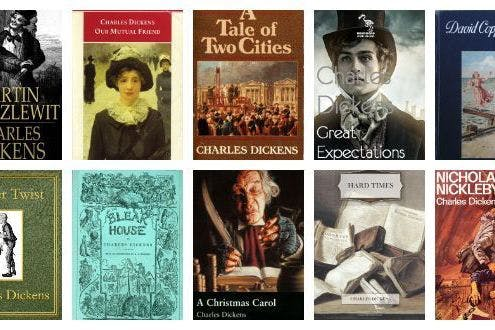

Dickens has made many, many books. One of my favorites is Oliver Twist. It is about a boy who's mother died during childbirth and his father being on a mysterious absence. He is put under the care of a woman called Ms Mann, whom he stayed with for 9 years. After that, he is put to work picking and weaving oakum. Being in such terrible conditions with a severe lack of food, Oliver asks one day for another portion of gruel. This causes an uproar and leads to him being bought by a man named Mr Sowerberry. Due to his sorrowful appearance, Oliver is used as a mourner at children's funerals, making Mr Sowerberry pleased with him. However, Mr Sowerberry's wife mistreats the boy and underfeeds him. He is bullied into running away into London in hopes of getting a better life.
This is the introduction to the book. It is a very strong introduction, as it tells us everything about the main character and his backstory. It shows us what he expects from people, his opinion of people and the conditions he is kept in. It truly is a great book to read if you're a fan of Charles Dickens.
